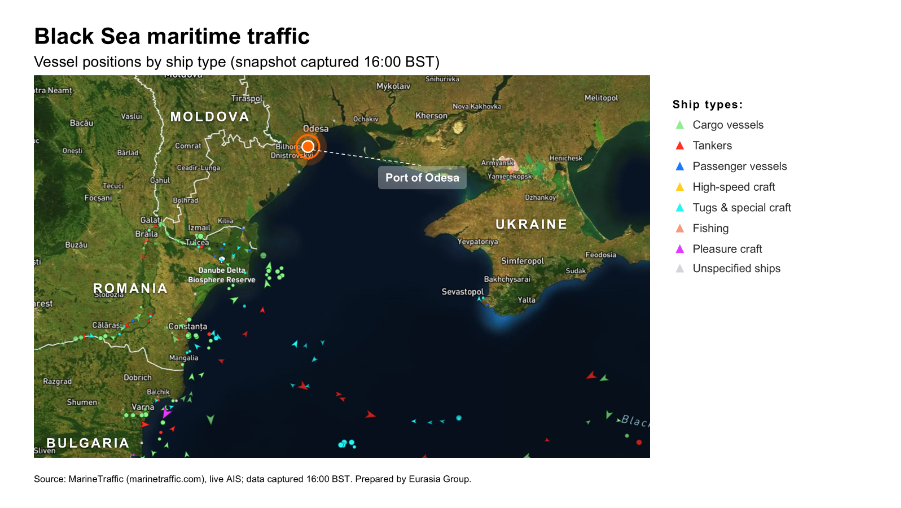
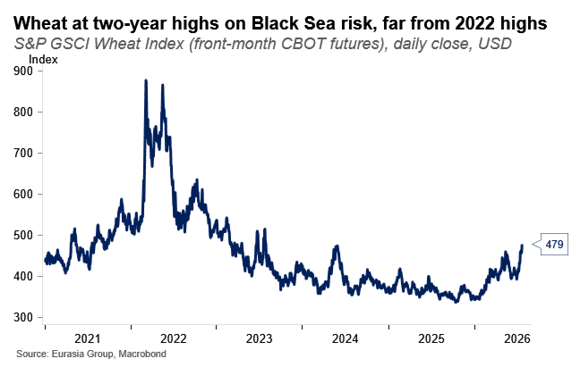

|
 |
|||
|
||||
|
||
The grain squeeze will probably persist. Ukraine’s Agriculture Minister Taras Vysotskyi said on 23 July that traffic had stopped around Odesa after an almost two-week Russian campaign against Ukrainian Black Sea ports. He stressed that Kyiv had imposed no restrictions and that ports remained physically operational. However, about 90% of shipowners have suspended port calls because insurance premiums have risen and risks remain high.  This shutdown in Black Sea vessel traffic could last longer than previous ones, as Russia has intensified its strikes against Ukrainian ports. Russia and Ukraine are now locked in a tit-for-tat escalation that Kyiv has pledged to sustain. Earlier waves of attacks in November-December 2025 and January-February 2026 failed to halt Ukrainian maritime traffic for long. The current episode differs in scale and intensity as Russia responds to Ukraine’s expanding campaign against Russian shipping and inland infrastructure. Because both sides remain committed, the escalation is likely to sustain itself. The risk premium keeping shipowners out of the market will therefore decline slowly. Ukraine’s air defense vulnerabilities are amplifying the impact of the strikes. Moscow has intensified attacks on Odesa, Chornomorsk, and Pivdennyi. It is using Iskander-M ballistic missiles, Oniks anti-ship missiles, and mass drone raids. Ukraine lacks enough US-supplied Patriot interceptors, the only systems that can reliably stop those missiles. Ukraine has deployed its available batteries to defend cities and military supply lines, so shifting them to ports would be costly. As long as strikes continue to hit their targets, war-risk insurers will have no reason to reduce premiums. Moscow aims to weaken conditions inside Ukraine and erode allied support. Russia wants to disrupt seaborne deliveries of military goods to Ukraine and put additional pressure on state finances. Maritime grain exports are a major source of foreign revenue, so strikes on port infrastructure carry clear fiscal costs. Russia also aims to use higher global food prices to generate diplomatic pressure on Ukraine. Moscow hopes that governments in the Global South, and possibly even some European governments affected by the disruption, will press Ukraine to scale back its strikes on Russian infrastructure and de-escalate. Among price-sensitive Global South buyers, Egypt obtains about one-quarter of its wheat imports from Ukraine, while Indonesia obtains about 18% of these imports from Ukraine. Europe also faces risks through feed grains and vegetable oils. Ukraine is the EU’s largest corn supplier and provides about 92% of the bloc’s sunflower oil imports. The effort is unlikely to succeed in generating diplomatic pressure. European governments are unlikely to push Ukraine to pause its strikes. Political support for Ukraine within the EU remains strong, and many governments view the deep strikes as legitimate. Governments in the Global South have less leverage over Ukraine and may instead blame Russia for the supply disruption. We don’t expect a renewal of the UN-brokered agreement of July 2022 that permitted the safe commercial export of grain and foodstuffs from three key Ukrainian ports. Rerouting is plausible but would raise export costs. Kyiv can move grain through the Danube, Romanian ports, and rail, as it did at the start of the war. Each alternative, though, raises freight and logistics costs and narrows margins against cheaper Russian supply. It also has physical constraints and cannot replace the maritime export route completely. Kyiv is also concerned that a larger reliance on overland exports could worsen relations with Poland and Romania. When Ukraine last increased grain shipments through Poland by road and rail, it triggered sustained protests from Polish and Eastern European farmers and truckers, who blockaded the border against Ukrainian goods. A renewed westward flow could reignite those tensions just as Kyiv needs EU solidarity most. Ukraine’s fiscal position is likely to deteriorate as export revenue falls. Grain is a top source of foreign currency, as agricultural products represent 60% of goods exports. Even a temporary disruption would deepen the structural erosion of Ukraine’s export markets, as price-sensitive buyers shift to South American and Russian grain. The timing is also damaging, as Ukraine is gearing up for the harvest season and traders need to clear grain storage. Global South countries are most vulnerable to any price shock. Egypt, Algeria, and Indonesia together bought 62% of Ukrainian wheat in 2025-2026, with Egypt alone importing 3.9 million tons. Wheat prices are already at a two-year high. A prolonged disruption would fall hardest on these budget-constrained buyers, giving Ukraine a humanitarian argument against the strikes even as Russia attempts to weaponize the same issue as diplomatic pressure against Ukraine.
 |